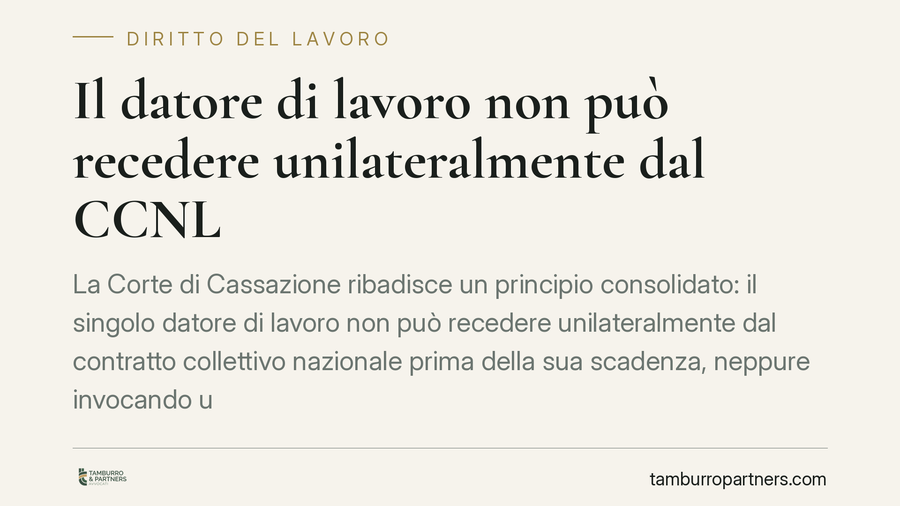

Il datore di lavoro non può recedere unilateralmente dal CCNL
La Corte di Cassazione ribadisce un principio consolidato: il singolo datore di lavoro non può recedere unilateralmente dal contratto collettivo nazionale prima della sua scadenza, neppure invocando una crisi aziendale. Un recesso di questo tipo resta privo di effetti e può generare differenze retributive a carico dell'impresa. Diversa la sorte degli accordi di secondo livello.

Il caso
Una struttura sanitaria privata, in difficoltà economica, comunicava ai sindacati la volontà di sottrarsi all'applicazione del contratto collettivo nazionale di categoria. L'obiettivo dichiarato era contenere il costo del lavoro durante una fase di crisi. I lavoratori hanno contestato la legittimità di quella scelta, chiedendo l'applicazione integrale del trattamento previsto dal CCNL.
La Cassazione, in linea con il proprio orientamento consolidato in materia, ha escluso che il singolo datore possa liberarsi unilateralmente del contratto nazionale.
Inquadramento
Il contratto collettivo nazionale di lavoro (CCNL) è un accordo stipulato tra le associazioni datoriali e le organizzazioni sindacali rappresentative. Il singolo imprenditore vi è vincolato in quanto aderente a un'associazione firmataria, oppure perché ne applica di fatto le condizioni.
Il punto è che la fonte del vincolo non è individuale: il datore non è parte diretta del contratto, ma vi partecipa per il tramite dell'associazione di categoria. Da qui deriva il limite. Il recesso dal contratto collettivo compete alle parti stipulanti — cioè alle associazioni — non al singolo aderente. Un'eventuale "disdetta" comunicata dal singolo datore prima della scadenza non produce effetti: il contratto continua a trovare applicazione ai rapporti di lavoro in corso.
È bene distinguere questa situazione dal caso del contratto collettivo scaduto e non rinnovato, che segue regole proprie. Qui parliamo di un contratto ancora vigente, dal quale l'impresa prova a chiamarsi fuori prima del termine.
CCNL e accordi di secondo livello: una differenza che conta
La distinzione è decisiva. Mentre il contratto nazionale non è disponibile dal singolo datore, gli accordi di secondo livello — aziendali o territoriali — seguono una logica diversa.
Questi accordi, essendo stipulati direttamente dall'impresa (o a livello territoriale), possono essere disdetti alla scadenza secondo quanto previsto dall'accordo stesso, nel rispetto dei termini di preavviso pattuiti. È su questo terreno, non su quello del CCNL, che l'impresa in difficoltà può legittimamente intervenire per rivedere condizioni economiche e organizzative.
La crisi aziendale non cambia la regola
La situazione di crisi economica, per quanto seria, non attribuisce al datore un potere di recesso che l'ordinamento non gli riconosce. Il bisogno di ridurre i costi va perseguito con gli strumenti previsti, non aggirando il contratto nazionale.
Gli strumenti ci sono: gli ammortizzatori sociali (cassa integrazione, nelle sue varie forme), la rinegoziazione degli accordi di secondo livello, gli accordi di prossimità stipulati con le organizzazioni sindacali. Si tratta di percorsi che richiedono il confronto con la controparte sindacale, ma che reggono alla prova del giudizio.
Implicazioni pratiche
Per il datore di lavoro, il recesso unilaterale dal CCNL è esposto a un elevato rischio di inefficacia. Ciò significa che, in caso di contenzioso, l'impresa può essere condannata a corrispondere le differenze retributive maturate nel periodo in cui ha applicato condizioni deteriori rispetto al contratto nazionale, con relativi oneri contributivi e accessori.
Per il lavoratore, il principio rappresenta una tutela: il trattamento economico e normativo previsto dal CCNL resta esigibile finché il contratto è in vigore, a prescindere dalle scelte unilaterali del datore.
Cosa fare in concreto
- Verificate quale contratto applicate e la sua data di scadenza, distinguendo nettamente il CCNL dagli accordi aziendali o territoriali.
- Se siete un'impresa in difficoltà, confrontatevi con le organizzazioni sindacali e valutate ammortizzatori sociali, accordi di prossimità o rinegoziazione del secondo livello, invece del recesso dal nazionale.
- Non comunicate disdette unilaterali dal CCNL confidando in effetti immediati: il contratto continua ad applicarsi ai rapporti in corso.
- Se siete lavoratori e riscontrate l'applicazione di condizioni inferiori a quelle del CCNL vigente, raccogliete buste paga e comunicazioni aziendali e sottoponete la posizione a una verifica tecnica.
- Documentate ogni passaggio del confronto sindacale: in caso di contenzioso, la tracciabilità delle trattative è spesso dirimente.
Disclaimer
Contributo informativo a cura di Tamburro & Partners — Avv. Giuseppe Tamburro. Non costituisce parere legale.
Ogni storia di lavoro ha i suoi tempi.
Se gestisci HR e vuoi un confronto su contenzioso, ispezioni o licenziamenti, scrivi allo studio. Ti rispondiamo entro un giorno lavorativo.